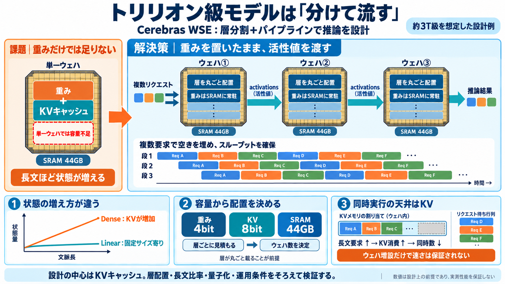

Ultrafast Frontier Inference | Cerebras Hot Chips 2026
The scale is visible in today’s rack designs. NVIDIA specifies 260 terabytes per second of rack-level NVLink bandwidth f…

Cerebras WSE-3T の「オンチップSRAM 44GB」と、層分割＋パイプラインで、約3Tパラメータ級モデルを高速に回す考え方を整理します（Kimi K3を例に）。
GPUでは weights（重み）だけでなく、推論時の中間状態—特に KVキャッシュ—がメモリと帯域を支配しがちです。Cerebrasでも「オンチップ44GB」に載らない要素が出ます。
オンチップで収まらず、転送が遅さに直結。
単一ウェハに “モデルを丸ごと” は難しいケース。
モデルを層（layer）単位で分け、ウェハ間は主に activations（活性値）を受け渡してパイプライン実行します。重みの移動を最小化するのが要点です。
“層が丸ごと載る”前提が効く。
重みは基本そのまま。
tokens/秒を稼ぐ設計。
線形アテンションは相対的に固定サイズ状態で済みやすい一方、dense（フル）アテンションはトークン数に応じて KVキャッシュが増えやすい、と整理します。
コンテキスト長への依存が小さめ。
キー/バリューを保持し再利用。
記事の前提では、weightsは 4bit量子化、KVキャッシュは 8bit。層ごとの必要容量から、各ウェハ（SRAM 44GB）に載るかを見積もり、必要ウェハ数を決めます。
層サイズを圧縮して搭載性を上げる。
同時実行を制限する主要因。
層が丸ごと入る設計が目標。
層配置がうまくいくと、各ウェハのSRAMに層が収まり、ウェハ間で動くのは主に中間結果（activations）になります。重み転送を避けられるため待ち時間が小さくなる、という説明です。
weightsは基本その場。
状態の受け渡しで前へ進む。
単一リクエストを順番に流すとステージがアイドルになり得ます。そこで複数リクエストを同時に投入し、パイプラインを常時満たしてスループットを確保します。
ステージが交互に空く。
ステージごとに別リクエスト処理。
遅延とスループットのバランス。
同時リクエスト数（concurrency）の上限は主に KVキャッシュのオンチップ割当で決まる、と記事は述べています。dense層が必要とするKV量を見て、1リクエストあたりの消費→最大同時数へ進みます。
プロンプト長がKV消費に影響。
コンパイラの層配置も効く。
単一ウェハに全てを詰める発想だと限界があります。分割してパイプライン化し、activations中心の受け渡しと、dense/線形のメモリ特性差を使う方が成立しやすい、という構図です。
weights＋KVが同時に爆発しやすい。
層を丸ごと配置し、通信をactivations中心に。
この方式はより大きなモデルにも拡張でき、ウェハが増えるほど weights と request state（要求に伴う状態）を収める余地が増える、とまとめられています。結果として、より多くの層を配置しやすくなります。
同時性はKVで調整。
パイプライン段数も増加。
concurrency天井が先に来る。
算定（ウェハ数・同時数）が成立するかは、平均リクエスト長や dense/線形の配分、量子化設定、アテンション実装、スケジューリングなどの前提に強く依存します。したがって“設計上の目安”として読むのが安全です。
数式が画像依存だと再計算しづらい。
ピーク時はKV上限が効いて待ちが出やすい。
この記事の理解に最も効く論点は「KVキャッシュ中心のメモリ制約」「dense/線形の層配置」「activations中心のウェハ間パイプライン」「concurrencyはKV天井」です。
concurrencyは主にKV割当で決まる。
重み移動が減って低遅延に寄与。
key/valueを保持し次トークン生成へ。
KVが増えやすく同時性に直撃。
固定サイズ寄りの状態で設計。
The scale is visible in today’s rack designs. NVIDIA specifies 260 terabytes per second of rack-level NVLink bandwidth f…
| Spec | Cerebras WSE-3 | NVIDIA H100 SXM5 | --- | Architecture | Wafer-Scale | Hopper | | Compute cores | 900,000 AI …
How much higher does it clock? By our estimate, Cerebras is now running the silicon at 2.8 GHz, up from 1.4 GHz last gen…
CS-4 runs on WSE-3 Turbo—the world’s largest and fastest AI processor. Its four trillion transistors and 900,000 AI core…
However, in WSE-3 architecture, the compute and memory are decoupled, and the memory capacity of a single CS-3 scales fr…